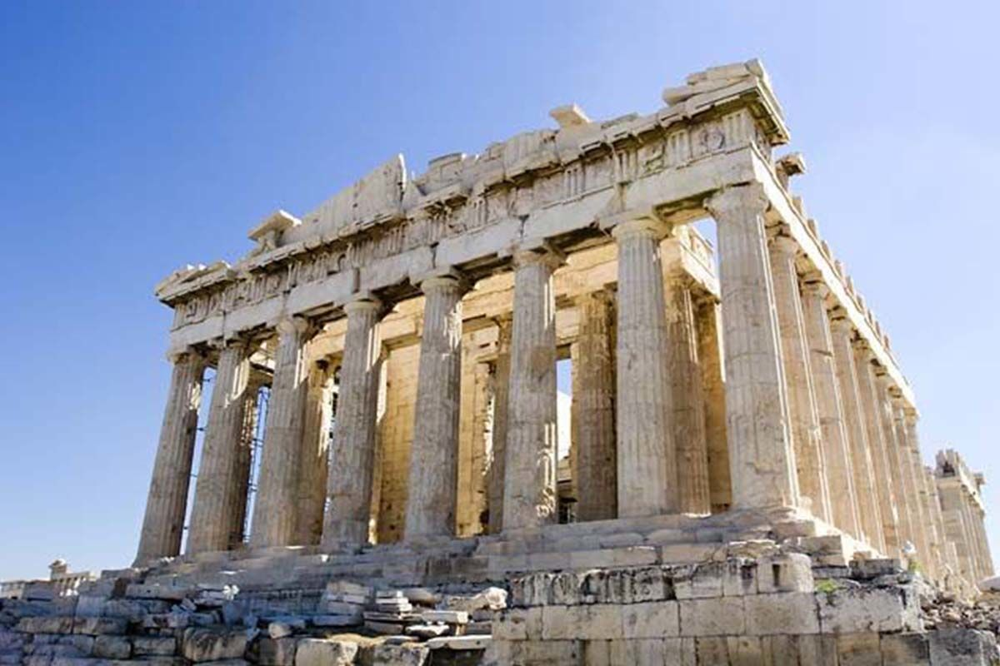
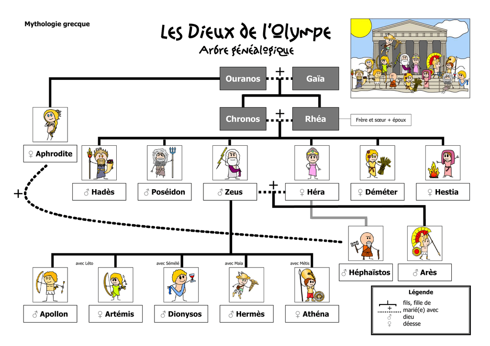

Athéna
Athéna est la déesse grecque de la sagesse, de la stratégie guerrière (donc de la guerre), de la justice et du combat mais aussi la déesse protectrice des artisans et de la cité d'Athènes. Elle a été assimilée à Minerve par les Romains. C'est la fille de Zeus et de Métis. Athéna est une déesses qui a décidé de ne pas avoir de progéniture (comme Artémis).

Athéna vit dans l'Olympe. L'Olympe est le séjour des dieux, dans la mythologie greco-romaine ; c'est l'ensemble des dieux qui y habitaient.

Zeus est le maitre de l'Olympe car s'est le Dieu des dieux. Il y a beaucoup de dieux grecque. voici un arbre généalogique pour vous expliquer.

Sur cet arbre généalogique il n'y a pas tout les dieux. Zeus est infidèle à son épouse légitime : Héra. Il y a plus de dieux et déesses mais ici on nous montre le divinités les plus connues. Mais il y a les douze plus grand dieux et déesses : Zeus, Poséidon, Hadès, Déméter, Hestia et Héra, auxquels il faut ajouter les dieux de la génération suivante, presque tous descendants de Zeus lui-même : Apollon, Artémis, Athéna, Arès, Aphrodite, Héphaïstos, Hermès, et Dionysos. Les divinités Olympiennes : Dans la tradition interprétative de la mythologie grecque, les divinités olympiennes sont les divinités principales du culte. Elle tiennent leur nom du mont Olympe, sur lequel elles sont censées résider, encore que deux d'entre elles, Poséidon et Hadès ont leurs demeures à l'opposé.